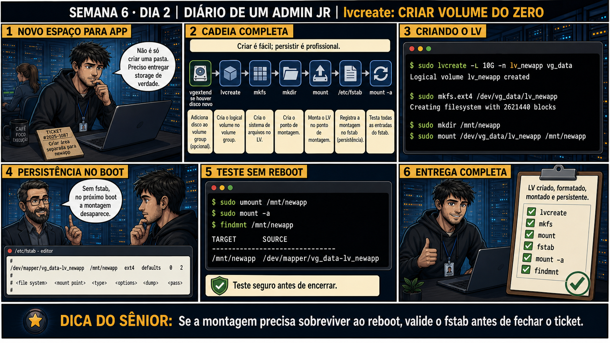

DIARIO DE UM ADMIN JR. | FASE 1 — LINUX, DO BÁSICO AO AVANÇADO
🔗 Conecta com ontem: lvextend cresceu um LV já existente. Hoje o pedido é
diferente: criar um espaço de storage completamente novo, do zero, pra uma aplicação nova — o ciclo completo
até o fstab, não só uma expansão.
🔓 Privilégio de hoje: criar um Logical Volume novo, do zero, persistente. Você
ganha autorização pra usar lvcreate + mkfs + mount + fstab — fechando o ciclo completo até sobreviver a um
reboot.
Semana 6 · Dia 2 | Nível Júnior
Criando um Logical Volume do Zero
criar é fácil; persistir é profissional — se a montagem precisa sobreviver ao reboot, valide o fstab
ANTES DE ALTERAR, OBSERVE. DEPOIS DE ALTERAR, VALIDE.

1. O chamado
Ticket #2025-1087: criar uma área de storage separada pra uma nova aplicação. Não é só
criar uma pasta — é entregar storage de verdade: volume criado, formatado, montado, e persistente depois de
um reboot.
💡 Passa o mouse nas palavras destacadas pra ver uma dica rápida — clica se quiser a explicação completa com analogia.
2. O sênior te conta
Terça-feira, Semana 6
Ontem você aprendeu na pele que lvextend sozinho não basta — precisa do resize do filesystem
logo depois. Hoje o chamado é outro: não expandir algo que já existe, mas criar um espaço de storage do
absoluto zero, pra uma aplicação nova. Ticket #2025-1087. E aqui mora uma armadilha irmã da de ontem.
Lembro de um colega júnior — chamo ele de Marcos aqui — que recebeu um chamado quase idêntico no meu
segundo ano. Ele rodou lvcreate, mkfs.ext4, criou a pasta, montou com
mount, testou acesso, viu tudo funcionando, e fechou o ticket como resolvido. Duas semanas
depois, o servidor precisou de uma reinicialização de rotina pra atualização de kernel. Quando voltou, a
aplicação não encontrava mais o diretório — vazio, como se nada tivesse sido criado. O Marcos jurava que
tinha feito tudo certo. E tinha, quase tudo.
O que faltou foi o mesmo tipo de "segunda camada" que você viu ontem: mount sozinho é
temporário — ele funciona até o próximo boot, e nada mais. Pra sobreviver a uma reinicialização, a
montagem precisa estar registrada em /etc/fstab, o arquivo que o sistema lê automaticamente
toda vez que liga. Criar é fácil. Persistir é o que separa um júnior de um profissional.
Hoje você vai fazer o ciclo completo: lvcreate → mkfs → montar manualmente →
escrever a linha certa no fstab → e, mais importante, testar essa linha com mount -a antes de
considerar qualquer coisa resolvida — sem precisar reiniciar o servidor de verdade pra descobrir se
funciona ou não.
3. Decodificador de conceitos
Clica em qualquer termo pra ver a definição completa e uma analogia do dia a dia:
4. Ferramentas e leitura da evidência
Comando
O que observar e por que importa
lvcreate -L 10G -n lv_newapp vg_data
Cria o Logical Volume com nome e tamanho específicos.
mkfs.ext4 /dev/vg_data/lv_newapp
Formata o volume recém-criado com um sistema de arquivo.
Linha em /etc/fstab
Garante que a montagem sobrevive a um reboot — sem ela, a montagem manual é temporária.
Resultado esperado: volume formatado com sucesso e pasta vazia criada, pronta pra receber a montagem.
Por que fizemos isso: um LV sem filesystem não pode ser montado — mkfs prepara a "estrutura interna" que o sistema operacional precisa pra organizar arquivos ali dentro.
Cilada comum: rodar mkfs no dispositivo errado. Confirme sempre o caminho completo (/dev/vg_data/lv_teste) antes de formatar — mkfs é destrutivo e não pergunta duas vezes.
Ação: monte manualmente e confirme o acesso — mas pare aqui, sem editar o fstab ainda, e note que essa montagem é temporária.
$ sudo mount /dev/vg_data/lv_teste /mnt/teste
$ df -h /mnt/teste
Resultado esperado: volume acessível e visível em df -h — mas essa montagem, sozinha, não sobrevive a um reboot.
Por que fizemos isso: sentir que "está funcionando agora" sem ainda ter tocado no fstab é exatamente o ponto onde o Marcos da história parou — e onde você não vai parar.
Cilada comum: considerar o chamado resolvido nesse ponto, como o colega da história fez — mount manual é temporário, ponto final.
🧑🏫 Aqui entra o Mentor (em breve): se a sintaxe da linha do fstab parecer confusa, este é o ponto onde o chat com o Sênior-IA vai ajudar a montar a linha correta.
Ação: descubra o UUID do volume e adicione a entrada correspondente no /etc/fstab.
$ sudo blkid /dev/vg_data/lv_teste
# copie o UUID e edite /etc/fstab:
UUID=xxxxxxxx-xxxx-xxxx /mnt/teste ext4 defaults 0 2
Resultado esperado: linha adicionada corretamente ao fstab, usando UUID, sem quebrar nenhuma entrada existente no arquivo.
Por que fizemos isso: essa é a linha que transforma a montagem de temporária em persistente — é o registro que o sistema lê em todo boot.
Cilada comum: usar o nome do dispositivo (/dev/vg_data/lv_teste) em vez do UUID, ou digitar a linha errada — um erro de sintaxe no fstab pode travar o boot do servidor inteiro.
Ação: teste a persistência sem reiniciar de verdade, e documente o resultado final.
$ sudo umount /mnt/teste
$ sudo mount -a
$ findmnt /mnt/teste
Resultado esperado: volume remontado com sucesso via mount -a, confirmando que a linha do fstab está correta — reproduzindo o painel 6 da prancha de hoje.
Por que fizemos isso: mount -a simula exatamente o que acontece no boot, sem o risco de reiniciar o servidor pra descobrir que a linha estava errada.
Cilada comum: pular esse teste e confiar que "deve estar certo" — é justamente esse teste que teria salvo o Marcos da história.
6. Antes de ver as opções — tenta responder
🧠 Recall ativo: qual é a cadeia completa de passos entre "espaço livre no VG" e "pasta pronta pra
uso, sobrevivendo a um reboot"?
lvcreate (cria o LV) →
mkfs (formata) →
mkdir + mount (monta manualmente) →
/etc/fstab (registra pra persistir) →
mount -a (testa sem precisar reiniciar de verdade). Pular o fstab significa que a montagem some no
próximo boot.
QUESTÃO 1 de 3
7. Questão comentada — clica numa alternativa
Você precisa entregar um novo espaço de storage completo pra uma aplicação. Qual
é a sequência de passos correta e completa?
💡 Analogia do Sênior para Fixar: O comando 'lvcreate -L 20G -n lv_dados vg_producao' é como recortar uma fatia sob medida de um queijo grande: retira 20GB da piscina do VG e cria um novo disco lógico.
QUESTÃO 2 de 3 — cenário de erro real
7.1 mount -a rodou sem erro depois da entrada no fstab — o que isso prova?
Depois de editar /etc/fstab, o colega roda umount seguido de
mount -a, e o comando executa sem nenhum erro, remontando o volume.
O que esse teste confirma exatamente?
💡 Analogia do Sênior para Fixar: Criar Logical Volumes dedicados para /var e /home é como colocar compartimentos estanques no navio: se o /var lotar com logs, a raiz (/) não trava e o servidor continua navegando.
QUESTÃO 3 de 3 — detalhe que confunde todo iniciante
7.2 "Montei manualmente e está funcionando, então o chamado já está resolvido, certo?"
Um colega monta o novo volume manualmente com mount, confirma que a pasta está acessível,
e considera o chamado encerrado sem tocar no fstab.
Essa conclusão está correta?
💡 Analogia do Sênior para Fixar: O comando 'mkfs.ext4 /dev/vg/lv_dados' é como desenhar as gavetas e prateleiras no armário vazio: prepara a estrutura interna onde os arquivos serão organizados.
8. Procedimento profissional
Confirme espaço livre no VG antes de criar o novo LV.
Crie o LV com lvcreate, com nome e tamanho claros.
Formate com mkfs, escolhendo o tipo de filesystem apropriado.
Monte manualmente e teste, depois adicione a entrada correta no fstab.
Teste a persistência com umount + mount -a, sem precisar reiniciar de verdade.
Prevenção
Adote um checklist padrão de entrega de storage (LV criado → formatado → montado → fstab
escrito com UUID → testado com mount -a) como parte do próprio template de fechamento do ticket — assim
o chamado só pode ser marcado como resolvido depois que o teste de persistência aparece documentado.
9. Validação e encerramento
O LV foi criado, formatado, montado e registrado no fstab — ciclo completo.
A entrada do fstab foi testada com mount -a antes de considerar concluído.
UUID foi usado no fstab, não o nome de dispositivo que pode mudar.
O chamado só foi encerrado depois da validação de persistência.
Rollback e limites
Um erro de sintaxe no fstab pode impedir o boot do sistema inteiro — por isso
testar com mount -a antes de reiniciar de verdade é essencial, nunca editar fstab e reiniciar sem testar
primeiro.
💡 Sobre repetição espaçada: "criar é fácil, persistir é profissional" conecta
com o mesmo cuidado do Dia 1 de ontem — sempre duas etapas, nunca uma só parecendo completa. O Anki vai
conectar os dois.
10. Resposta final
Alternativa correta: B. Nesta aula, a decisão correta foi
lvcreate, mkfs, mkdir + mount, e adicionar a entrada correta no fstab. O ponto central do caso é
este: se a montagem precisa sobreviver ao reboot, valide o fstab antes de fechar o ticket.
🔓 O que você desbloqueou hoje
Capacidade de entregar storage completo e persistente, do zero. Amanhã você
aprende RAID — e a lição mais importante da semana: redundância não é backup.